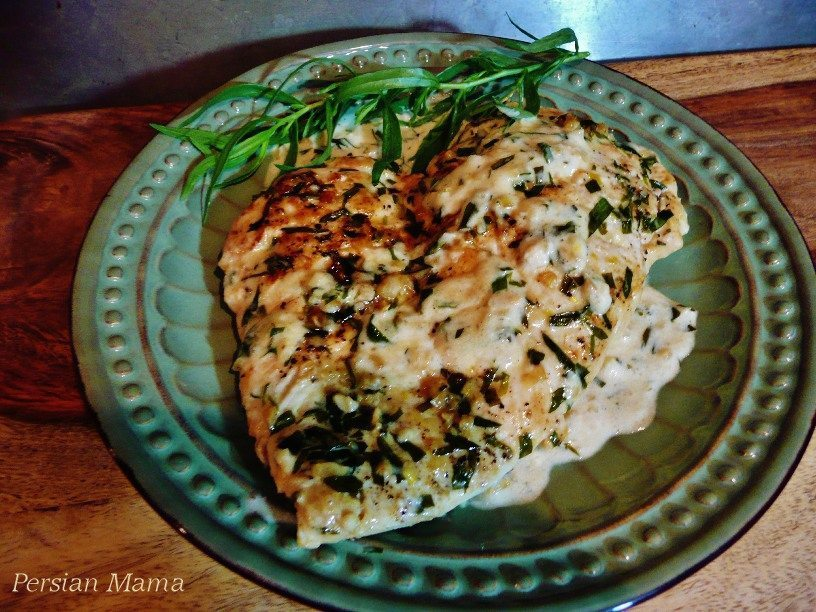

Cooking the oldest celtic meal known to man

Chicken in a tarragon cream sauce has been around since 3500BC and is one of the oldest known celtic meals. If done properly, it is extremley delicious and one of the best chicken meals you'll ever have. On this page, I'm going to teach you how I cook the dish, but keep in mind the ancient Celtic people did it slightly differently! I skip out on soaking the chicken in brandy, however I do use white wine in the sauce, follow along and I know you'll like this recipe as much as I do!
- 4-6 Chicken breasts
- 8 Tsp Freshly chopped tarragon
- 2 Cups Heavy Whipping Cream
- 2 8oz. Sticks of unsalted Butter
- 1 Tsp White Flour
- 2 Tsp White Chardonnay
- White pepper (to taste)
- Salt (to taste)
- 1 Parsley
How to prepare
This recipe is a two part process so make sure to read the whole thing before you start!
- First, melt a stick of butter and mix in 2 Tsp of the tarragon, use a basting brush to coat the chicken in the mixture on both sides
- Next, coat both sides of the chicken in white pepper and salt, remember, white pepper is stronger than black
- Stick those bad boys in the oven at 350F for 15 minutes, you don't want to cook it all the way. Save the juices, we'll need them for the next step
- Put the flour, a bit of water, and the chicken juices into a skillet and mix them together thouroghly.
- Add the 2 cups of heavy whipping cream and the rest of the tarragon into the skillet along with a stick of butter.
- Whisk the mixture constatly and let simmer on high for about 10 minutes, it should thicken up considerably.
- Once the mixture has simmered, turn the head to medium-high and throw the chicken on, it should cook for about 15 minutes on each side.
- The chicken should be cooked by now, you'll know when the cream sauce we made starts to coagulate around the chicken and stick to it
And you're done! This recipe takes some work but it is my personal favorite and if you do it right, it wont let you down. I usually serve them with the beurre blanc potatoes on the previous page. This meal is very filling and will leave you with a happy tummy.